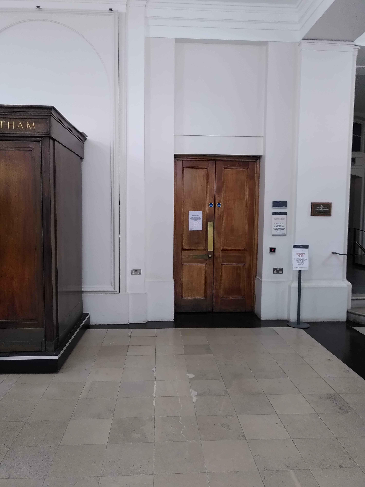
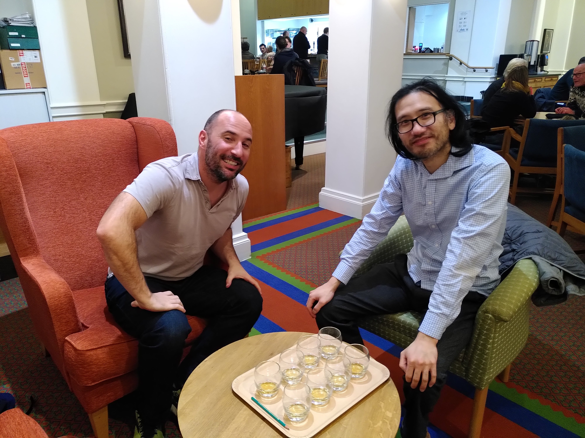

Whiskey Business
Issue 2
Dr Livingstone reports on a uniquely intoxicating experiment
Behind closed doors
I am sitting in the Housman room, the academic staff common room at UCL, with two eager colleagues. The room is a well-kept secret from the students of UCL, being hidden in plain sight behind an unmarked door in the North Cloisters. The purpose of our visit today is to recreate a famous statistical experiment, with a few twists.
The brains behind the test, associate professor Dr Terry Soo, sits confidently to my right. To my left, looking rather less confident, is research fellow Dr Nathan Green. Terry’s ingenious plan is to recreate the famous lady tasting tea experiment, devised by Sir Ronald Fisher around 100 years ago to assess whether his colleague at Rothamsted Research, Muriel Bristol, was able to correctly identify, as she proclaimed, whether milk or tea was poured first into the cup.
Our premise is slightly different, owing to Dr Soo’s preference for whiskey over tea. I was intrigued when he initially proposed the idea, as the addition of alcohol seemed to give a new twist to an old story. The initial design, however, required Dr Soo to drink eight glasses of whiskey in a single sitting. This seemed a little extreme! To make the experiment more palatable, Dr Green offered his assistance, and I must admit that this intrigued me further, as more statistical questions could now be asked of the data.
Re-designing the experiment
In Fisher’s initial experiment, Ms Bristol was required to drink from eight cups of tea. In four of these the milk was poured first, followed by the tea, and in the remaining four the reverse was done. Fisher provided a 10-page analysis of the result in his 1935 book ‘The Design of Experiments’. Under the null hypothesis that Ms Bristol’s classification was independent of the truth, the number of cups that she should have correctly been able to classify would follow a hypergeometric distribution (a result that later formed the basis of Fisher’s Exact Test). Using this knowledge, Fisher computed a significance level that he deemed suitable to draw the conclusion that this hypothesis could be safely rejected. Unfortunately for his colleague, this resulted in his requirement that all eight cups must be classified correctly for him to believe her claim. Our present day variation involves two participants, who will each consume four half-glasses of whiskey. I consult with the bar staff on the most similar tasting choices, before deciding on Bell’s and Johnnie Walker (black). The former represents a cheaper option and so provides an alternative classification system. This is helpful, as Dr Green has no idea how either brand should taste.
Whiskey-o-clock
After carefully arranging the glasses and looking pretty suspicious as I bring them over to the table on a large tray, I place them before the participants and hand them options one by one. Dr Soo begins smelling alternatives, before drinking the first and confidently declaring it to be Johnnie Walker. He then proceeds through the remaining three glasses without much trouble. In the last case, he correctly classifies the drink from smell alone. I worry that perhaps the experiment is too easy.
My fears are allayed, however, when it comes to the turn of Dr Green. The first glass is not too bad for him, but upon drinking the second he lets out a loud groan. “That was worse than the first one,” he says, before declaring that it must be Bell’s, the cheaper option. He is, in fact, correct, but then proceeds to drink the remaining two with a louder groan on each occasion. People are starting to stare. He decides that they must all be Bell’s. This leads to a classification of three Bell’s and one Johnnie Walker in his case, despite the fact that he has been told a priori that there will be two of each.
Questions and (some) answers
Is it fair to treat each tasting test as independent, given that in the latter case he has already consumed a significant amount of whiskey in a short period of time? Is it fair to pool the observations recorded by a seasoned whisky pro with those of a comparative novice and treat them as exchangeable? I ignore these questions in my quest for a pragmatic answer to our initial question. My participants were able to correctly classify seven out of eight. Not bad, but not good enough for Fisher. Ms Bristol, by contrast, did in fact correctly classify all eight cups of tea.
Dr Soo is frustrated, and he has a right to be. In fact, I was not completely sure whether I had correctly remembered the brand of Dr Green’s last shot, and so I had asked Dr Soo to smell it beforehand, after which he confidently whispered to me that it was Johnnie Walker (as I had suspected). Such confidence hinted that perhaps Dr Soo could have done it all on his own. Alas, this was not the experiment.
Treating the subjects separately, we have 4/4 correctly classified for Dr Soo versus 3/4 for Dr Green. Neither of these cases, however, achieve the level of significance required by Fisher to reject the null hypothesis that there is no difference in taste between the whiskies. The sample size is simply not large enough.
Dr Soo is eager for more, but I call things to a close, and suggest that we wash away the taste with some Housman ale instead. “Perhaps we will try again in the next edition,” I cheekily suggest, to which Dr Green responds with the loudest groan of the night.
The Housman room – hidden in plain sight behind an unmarked door in North Cloisters.

Dr Green (left) and Dr Soo (right) are eager to begin the tasting.